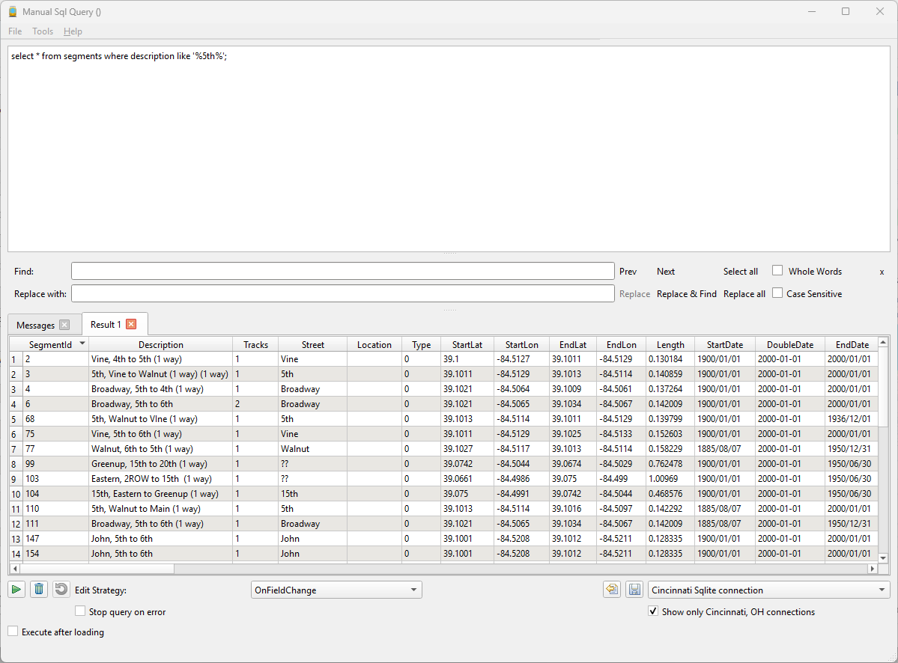

Using the SQL query dialog
Mapper has a built-in GUI SQL interface which can be brought up by selecting Tools->SQL query dialog from the main window.

The dialog has two main sections. The top section contains sql statements which can be typed in or loaded from .sql script files from storage. The bottom
section displays messages and errors produced when the button is pressed.
A word of caution
Executing any SQL statement that changes data stored in the database (e.g. insert, update, delete) can have disastrous results if not done correctly. Be sure
that any database table that youb are making changes to is backed up in case you need to back-track.
- If executing multiple statements, consider executing BEGIN; as the first statement to initiate an sql transaction. Then, in case the result is not what was desired,
you can click on the button to roll back the changes.
- Unless you are doing something like correcting the spelling of a street, segment or route name, avoid changing any other data elements such as dates.
- Rather than executing an sql statement, for example, to change a nane, consider executing a "select * from
where.." statement. This will the produce
a result set that can be changed.